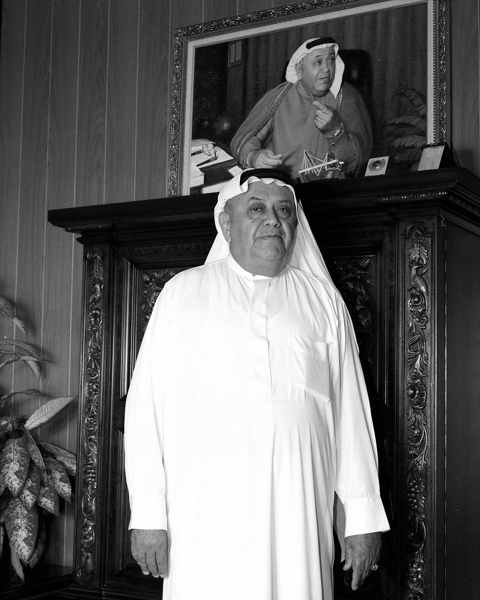

صفحة مضيئة في تاريخ المملكة
تاريخنا
من الغوص على اللؤلؤ والزراعة في حريملاء إلى تأسيس إحدى أكثر مجموعات الأعمال احتراماً في المنطقة الشرقية.

مطلع القرن العشرين — بدايات متواضعة
مسيرة حمد بن أحمد القصيبي
وُلد الشيخ حمد في حريملاء، وبدأ رحلته بموارد محدودة لكن عزيمة راسخة. اشتغل بالغوص على اللؤلؤ والزراعة، وبنى أسس أخلاق العمل وارتباطه العميق بأهل المنطقة الشرقية.
امتدت رؤيته إلى أبعد من التجارة — سعى إلى بناء مؤسسات تخدم المملكة وشعبها لأجيال قادمة، وأصبح ركيزة أساسية في التنمية التجارية والصناعية للمنطقة الشرقية.
المحطات الكبرى
البداية
تأسيس أول نشاط تجاري
أسّس الشيخ حمد شركة حمد القصيبي في المنطقة الشرقية. وخلال هذا العقد، بنى علاقات وطيدة مع أرامكو السعودية، إذ كان يوفّر العملات الفضية لصرف رواتب الموظفين ودعم الاحتياجات التشغيلية المبكرة للشركة. كما أدّى دوراً محورياً في دعم تأسيس غرفة تجارة المنطقة الشرقية بالتعاون مع الأمير سعود بن جلوي.
التوسع والتنويع
شهدت الشركة نمواً ملحوظاً وتوسّعت في قطاعات اللوجستيات والتوريد الصناعي والسيارات، وأصبحت موزعاً لشركة فورد موتور ووكيلاً لإسو. وفي هذه المرحلة، أسّس الشيخ حمد أيضاً أول مصنع لتعبئة بيبسي كولا في المنطقة الشرقية، محققاً إنجازاً بارزاً في مسيرة التنمية الصناعية للمنطقة.
بناء الإرث
أسهم الشيخ حمد في تأسيس غرفة تجارة المنطقة الشرقية ودعم عملياتها الأولى، وعمل بشكل وثيق مع الأمير سعود بن جلوي.
مواصلة الرؤية
يتواصل الإرث عبر الأجيال، مستهدىً بقيم راسخة من النزاهة والطموح والالتزام بالتقدم الوطني.